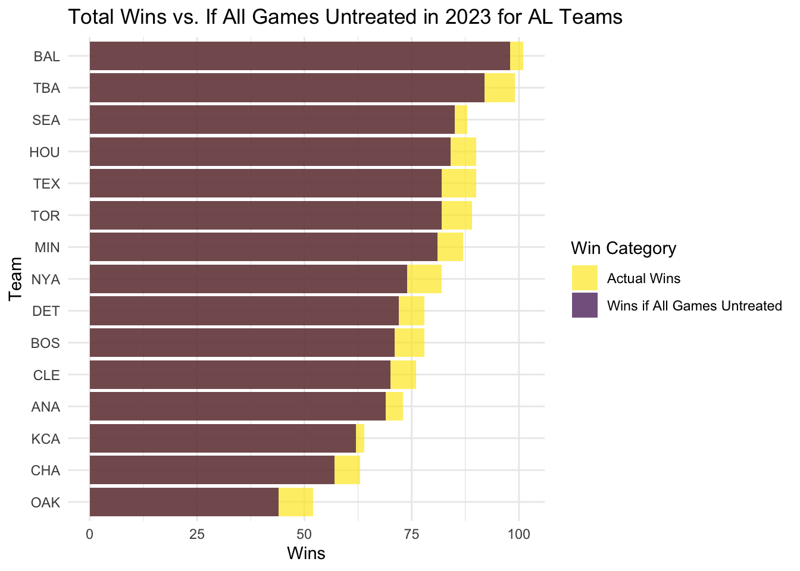
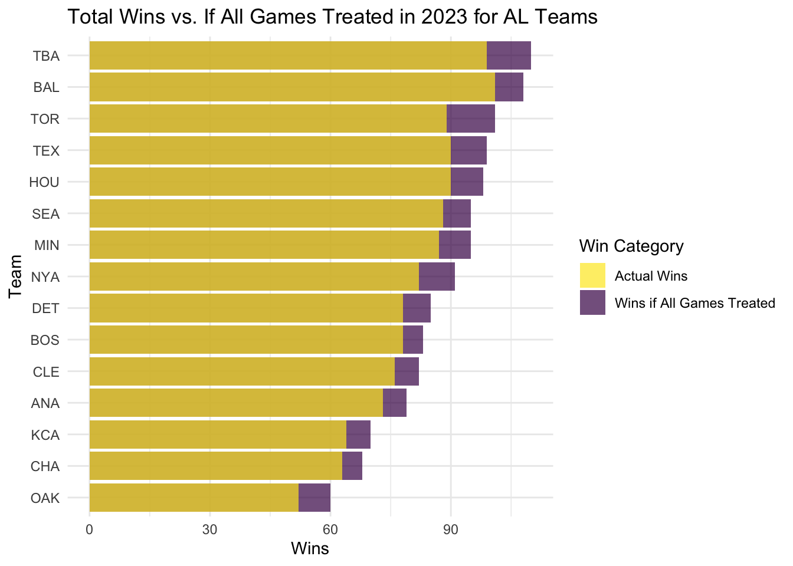
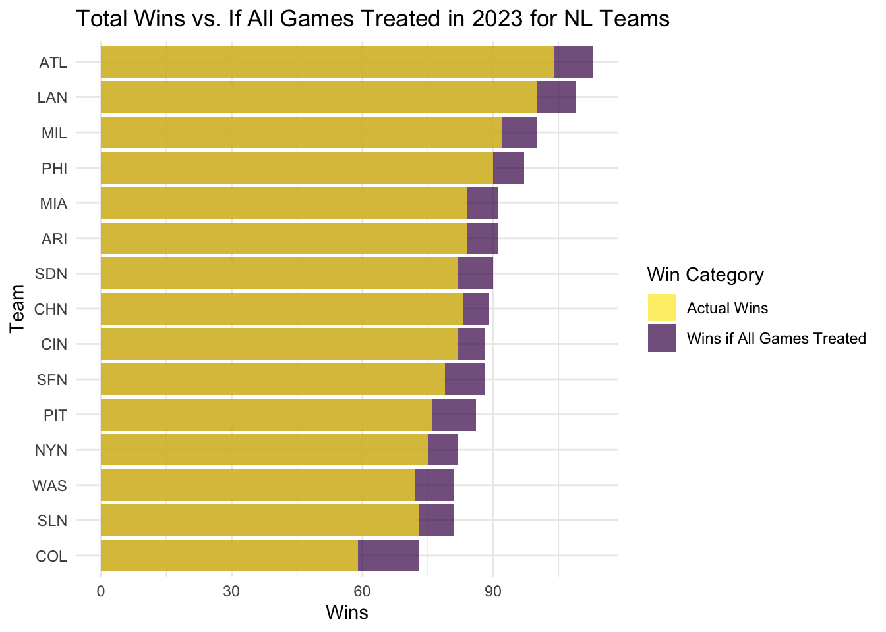
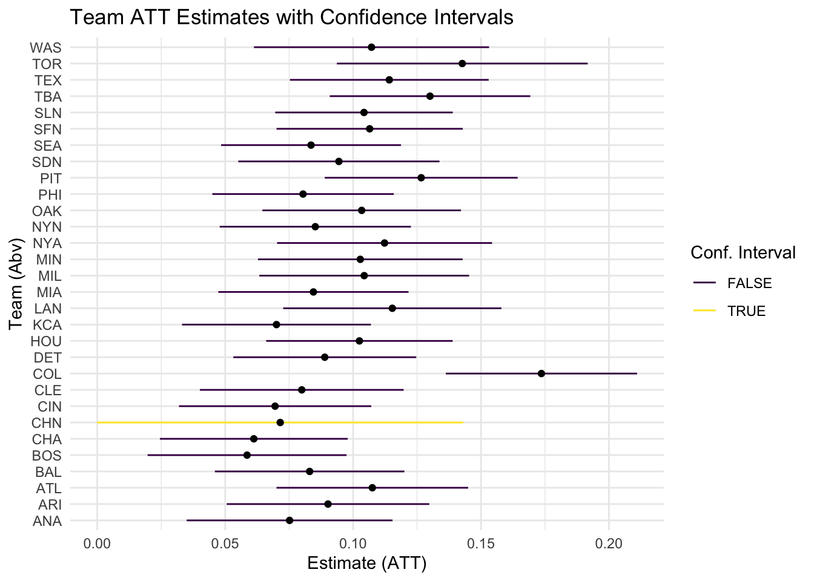

── Conflicts ────────────────────────────────────────── tidyverse_conflicts() ──
✖ dplyr::filter() masks stats::filter()
✖ dplyr::lag() masks stats::lag()
ℹ Use the conflicted package (<http://conflicted.r-lib.org/>) to force all conflicts to become errors
Warning: package 'marginaleffects' was built under R version 4.3.3
library(dagitty)library(scales)
Attaching package: 'scales'
The following object is masked from 'package:purrr':
discard
The following object is masked from 'package:readr':
col_factor
library(readr)library(stringr)library(cobalt)
cobalt (Version 4.5.5, Build Date: 2024-04-02)
Attaching package: 'cobalt'
The following object is masked from 'package:MatchIt':
lalonde
library(viridis)
Loading required package: viridisLite
Attaching package: 'viridis'
The following object is masked from 'package:scales':
viridis_pal
# Load required packageslibrary(dplyr)library(MatchIt)library(marginaleffects)# Initialize an empty list to store the results for each teamall_results <-list()# Iterate over team abbreviations and their data filesfor (abbr innames(team_files)) {# Read the data for the current team team_data <-read.csv(team_files[[abbr]])# Remove rows with missing values in covariates team_data <- team_data %>%filter(!is.na(Opp_Win_P_Cat),!is.na(Opp_Playoffs),!is.na(Opp_WS),!is.na(Dow),!is.na(Day_Night),!is.na(Away_SP_WAR), !is.na(Home_SP_WAR) )# Skip if the filtered dataset is too smallif (nrow(team_data) <10) { # Adjust the threshold as neededcat("Skipping team:", abbr, "- Not enough data after filtering\n")next }# Matching Method for ATT match_out_full <-matchit( Home ~ Opp_Win_P_Cat + Opp_Playoffs + Opp_WS + Dow + Day_Night + Away_SP_WAR + Home_SP_WAR,data = team_data,method ="full",exact =~ Opp_Win_P_Cat + Opp_Playoffs + Opp_WS + Dow + Day_Night,distance ="glm",estimand ="ATT" )# Print balance table (optional, for debugging/validation)cat("\nBalance Table for", abbr, ":\n")print(bal.tab(match_out_full))# Summary and plot (optional, for diagnostics) match_out_full_summ <-summary(match_out_full, interactions =TRUE)plot(match_out_full_summ) # Plot diagnostic information# Extract matched data match_data_full <-match.data(match_out_full)# Dynamically construct the dependent variable name dependent_var <-paste0(abbr, "_win")# Construct the formula dynamically formula_str <-paste0(dependent_var, " ~ Home * (Opp_Win_P_Cat + Opp_Playoffs + Opp_WS + Dow + Day_Night + Away_SP_WAR + Home_SP_WAR)") formula <-as.formula(formula_str)# Regression model based on matched data mod2 <-lm(formula, data = match_data_full, weights = weights)# Estimating ATT from the model att_results <-avg_comparisons( mod2,variables ="Home",vcov =~subclass,newdata =filter(match_data_full, Home ==1) )# Add the team abbreviation to the results att_results <- att_results %>%mutate(Team = abbr)# Store results in the list all_results[[abbr]] <- att_results}
# Initialize an empty list to store the results for each teamall_results <-list()# Iterate over team abbreviations and their data filesfor (abbr innames(team_files)) {# Read the data for the current team team_data <-read.csv(team_files[[abbr]])# Remove rows with missing values in covariates team_data <- team_data %>%filter(!is.na(Opp_Win_P_Cat),!is.na(Opp_Playoffs),!is.na(Opp_WS),!is.na(Dow),!is.na(Day_Night), !is.na(Away_SP_WAR), !is.na(Home_SP_WAR) )# Skip if the filtered dataset is too smallif (nrow(team_data) <10) { # Adjust the threshold as neededcat("Skipping team:", abbr, "- Not enough data after filtering\n")next }# Matching Method for ATC match_out_full_ATC <-matchit( Home ~ Opp_Win_P_Cat + Opp_Playoffs + Opp_WS + Dow + Day_Night + Away_SP_WAR + Home_SP_WAR,data = team_data,method ="full",exact =~ Opp_Win_P_Cat + Opp_Playoffs + Opp_WS + Dow + Day_Night,distance ="glm",estimand ="ATC" )# Print balance table (optional, for debugging/validation)cat("\nBalance Table for", abbr, ":\n")print(bal.tab(match_out_full_ATC))# Summary and plot (optional, for diagnostics) match_out_full_summ <-summary(match_out_full_ATC, interactions =TRUE)plot(match_out_full_summ) # Plot diagnostic information# Extract matched data match_data_full_ACT <-match.data(match_out_full_ATC)# Dynamically construct the dependent variable name dependent_var <-paste0(abbr, "_win")# Construct the formula dynamically formula_str <-paste0(dependent_var, " ~ Home * (Opp_Win_P_Cat + Opp_Playoffs + Opp_WS + Dow + Day_Night + Away_SP_WAR + Home_SP_WAR)") formula <-as.formula(formula_str)# Regression model based on matched data mod2 <-lm(formula, data = match_data_full_ACT, weights = weights)# Estimating ATC from the model atc_results <-avg_comparisons( mod2,variables ="Home",vcov =~subclass,newdata =filter(match_data_full, Home ==0) )# Add the team abbreviation to the results atc_results <- atc_results %>%mutate(Team = abbr)# Store results in the list all_results[[abbr]] <- atc_results}
# Initialize an empty list to store the results for each teamall_results <-list()# Iterate over team abbreviations and their data filesfor (abbr innames(team_files)) {# Read the data for the current team team_data <-read.csv(team_files[[abbr]])# Remove rows with missing values in covariates team_data <- team_data %>%filter(!is.na(Opp_Win_P_Cat),!is.na(Opp_Playoffs),!is.na(Opp_WS),!is.na(Dow),!is.na(Day_Night), !is.na(Away_SP_WAR), !is.na(Home_SP_WAR) )# Skip if the filtered dataset is too smallif (nrow(team_data) <10) { # Adjust the threshold as neededcat("Skipping team:", abbr, "- Not enough data after filtering\n")next }# Matching Method for ATC match_out_full_ATE <-matchit( Home ~ Opp_Win_P_Cat + Opp_Playoffs + Opp_WS + Dow + Day_Night + Away_SP_WAR + Home_SP_WAR,data = team_data,method ="full",exact =~ Opp_Win_P_Cat + Opp_Playoffs + Opp_WS + Dow + Day_Night,distance ="glm",estimand ="ATE" )# Print balance table (optional, for debugging/validation)#cat("\nBalance Table for", abbr, ":\n")# print(bal.tab(match_out_full_ATC))# Summary and plot (optional, for diagnostics)#match_out_full_summ <- summary(match_out_full_ATE, interactions = TRUE)#plot(match_out_full_summ) # Plot diagnostic information# Extract matched data match_data_full_ATE <-match.data(match_out_full_ATE)# Dynamically construct the dependent variable name dependent_var <-paste0(abbr, "_win")# Construct the formula dynamically formula_str <-paste0(dependent_var, " ~ Home * (Opp_Win_P_Cat + Opp_Playoffs + Opp_WS + Dow + Day_Night + Away_SP_WAR + Home_SP_WAR)") formula <-as.formula(formula_str)# Regression model based on matched data mod2 <-lm(formula, data = match_data_full_ATE, weights = weights)# Estimating ATC from the model ate_results <-avg_comparisons( mod2,variables ="Home",vcov =~subclass )# Add the team abbreviation to the results ate_results <- ate_results %>%mutate(Team = abbr)# Store results in the list all_results[[abbr]] <- ate_results}# Combine all team-specific results into a single data framefinal_results3 <-bind_rows(all_results)# Display the combined resultsprint(final_results3)
ggplot(ATT_results)+geom_linerange(aes(xmin = conf.low, xmax = conf.high, , y = Team, color = CI_Crosses_Zero))+geom_point(aes(x=estimate, y=Team))+labs(x ="Estimate (ATT)", y ="Team (Abv)", title ="Team ATT Estimates with Confidence Intervals", color ="Conf. Interval")+scale_color_viridis_d(option ="D")+theme_minimal()
MLB_wins_ATT2023 %>%filter(League =="AL") %>%arrange(desc(Att_total_wins)) %>%# Arrange by ATT wins in descending ordermutate(Team =factor(Team, levels =rev(unique(Team)))) %>%# Reorder factor levelsggplot() +geom_col(aes(x = total_wins, y = Team, fill ="Actual Wins"), alpha =0.7) +geom_col(aes(x = Att_total_wins, y = Team, fill ="Wins if All Games Untreated"), alpha =0.7) +scale_fill_manual(name ="Win Category",values =c("Wins if All Games Untreated"=viridis(2)[1], "Actual Wins"=viridis(2)[2]) ) +labs(title ="Total Wins vs. If All Games Untreated in 2023 for AL Teams",x ="Wins",y ="Team" ) +theme_minimal()

MLB_wins_ATT2023 %>%filter(League =="NL") %>%arrange(desc(Att_total_wins)) %>%# Arrange by ATT wins in descending ordermutate(Team =factor(Team, levels =rev(unique(Team)))) %>%# Reorder factor levelsggplot() +geom_col(aes(x = total_wins, y = Team, fill ="Actual Wins"), alpha =0.7) +geom_col(aes(x = Att_total_wins, y = Team, fill ="Wins if All Games Untreated"), alpha =0.7) +scale_fill_manual(name ="Win Category",values =c("Wins if All Games Untreated"=viridis(2)[1], "Actual Wins"=viridis(2)[2]) ) +labs(title ="Total Wins vs. If All Games Untreated in 2023 for NL Teams",x ="Wins",y ="Team" ) +theme_minimal()
MLB_wins_ATC2023 %>%filter(League =="AL") %>%arrange(desc(Atc_total_wins)) %>%# Arrange by ATT wins in descending ordermutate(Team =factor(Team, levels =rev(unique(Team)))) %>%# Reorder factor levelsggplot() +geom_col(aes(x = Atc_total_wins, y = Team, fill ="Wins if All Games Treated"), alpha =0.7) +geom_col(aes(x = total_wins, y = Team, fill ="Actual Wins"), alpha =0.7) +scale_fill_manual(name ="Win Category",values =c("Wins if All Games Treated"=viridis(2)[1], "Actual Wins"=viridis(2)[2]) ) +labs(title ="Total Wins vs. If All Games Treated in 2023 for AL Teams",x ="Wins",y ="Team" ) +theme_minimal()

MLB_wins_ATC2023 %>%filter(League =="NL") %>%arrange(desc(Atc_total_wins)) %>%# Arrange by ATT wins in descending ordermutate(Team =factor(Team, levels =rev(unique(Team)))) %>%# Reorder factor levelsggplot() +geom_col(aes(x = Atc_total_wins, y = Team, fill ="Wins if All Games Treated"), alpha =0.7) +geom_col(aes(x = total_wins, y = Team, fill ="Actual Wins"), alpha =0.7) +scale_fill_manual(name ="Win Category",values =c("Wins if All Games Treated"=viridis(2)[1], "Actual Wins"=viridis(2)[2]) ) +labs(title ="Total Wins vs. If All Games Treated in 2023 for NL Teams",x ="Wins",y ="Team" ) +theme_minimal()

ggplot(ATC_results)+geom_linerange(aes(xmin = conf.low, xmax = conf.high, , y = Team, color = CI_Crosses_Zero))+geom_point(aes(x=estimate, y=Team))+labs(x ="Estimate (ATT)", y ="Team (Abv)", title ="Team ATT Estimates with Confidence Intervals", color ="Conf. Interval")+scale_color_viridis_d(option ="D")+theme_minimal()

MLB_wins_ATC2023 %>%mutate(difference = total_wins - Atc_total_wins) %>%ggplot()+geom_col(aes(x = difference, y = Team, fill = CI_Crosses_Zero))+labs(x ="Estimate Fewer Wins in 2023 if All Games Treated", y ="Team (Abv)", title ="Team Estimated Wins if All Games Treated in 2023", fill ="Conf. Interval Crosses 0")+scale_x_continuous(breaks = scales::pretty_breaks(n =13)) +scale_fill_viridis_d(option ="D")+theme_minimal()